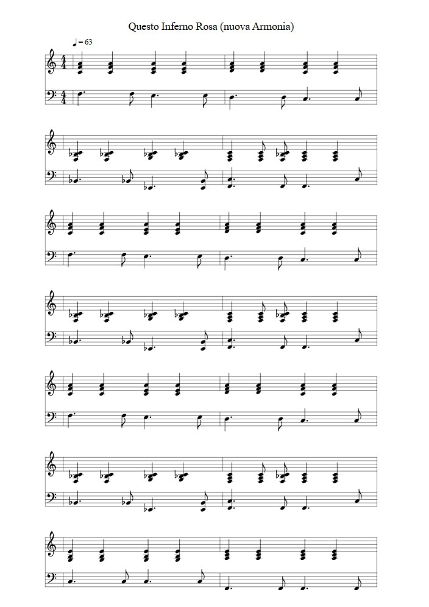

🎵 Capolavoro di Lucio Battisti su un armonia diversa
F Am/E Dm F/C Non ferirmi no, non farlo mai più
B♭2 E♭6 F F♭2 F I baci tranquillizzanti mi buttano giù
F Am/E Dm F/C Tu vuoi mostrare a tutti l'amore che c'è fra noi
B♭2 E♭6 F F♭2 F Una medaglia al valore che da sola ti dai
F Am/E Dm F/C Adesso che hai una casa un uomo e una reputazione
B♭2 E♭6 F F♭2 F Padrona, padrona anche del tuo padrone
C7+ F7+ Vorresti che ti seguissi nel goder con distinzione di tutti i frutti della vita
B♭2 E♭6 F F♭2 F quasi quasi compresi quelli colti da altre dita
"Il capolavoro di Lucio Battisti è semplicemente impareggiabile. Riarmonizzarlo non e' altro che un esercizio dimostrativo, per mettere in mostra quanto si possa ottenere, in poche ore, giocando con qualche tecnologia"
Il brano originale (frammento). Dall' audio originale su YouTube[1]
La voce isolata di lucio battisti. Ottenuta tramite splitter-ai[2]
La nuova parte (piano) trascritta usando ABC Notation[3]
